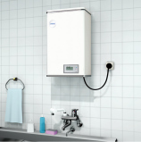
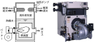
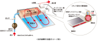
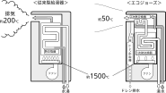

2021年
問題122 給湯設備に関する次の記述のうち，最も不適当なものはどれか．
（1）貫流ボイラは，煙道を備えている．
（2）貯蔵式湯沸器は，減圧弁を備えている．
（3）真空式温水発生機は，減圧蒸気室を備えている．
（4）太陽熱利用温水器には，集熱器と貯湯槽が一体で構成されているものがある．
（5）潜熱回収型給湯器は，排気ガスの潜熱を回収し，給水の予熱として利用する．
2021年
問題122 正解（2） 頻出度AAA
減圧弁は，高層ビルの中低層階などで給水圧力を調整するために給水配管側に設ける場合はあるが，貯湯部が開放型の貯蔵式湯沸器（2021-122-1図）が，減圧弁を備えることはない．
2021-122-1図 貯蔵式湯沸器

出典 ㈱日本イトミック
https://www.itomic.co.jp/category/c_ew/ewr_series/https://www.itomic.co.jp/category/c_ew/ewr_series/
-(1) 貫流ボイラは，煙管は備えていないが，煙道は必要．
-(3) 真空式温水発生機（2021-122-2図）は減圧蒸気室で蒸気の潜熱を熱交換に利用している．
2021-122-2図 真空式温水発生機

出典（写真） 株式会社前田鉄工所 ( MAEDA IRONWORKS CO.,LTD. )
https://www.maedatekkou.co.jp/product/rkvmfv を基に作成
-(4) 太陽熱利用温水器（2021-122-3図）．
2021-122-3図 太陽熱利用温水器

出典 株式会社 長府製作所
https://www.chofu.co.jp/products/solar/water_heaters/ecowaiter02.php
-(5) 潜熱回収型給湯器（2021-122-4図）では，排気の潜熱を給水の予熱に利用して回収している．
発生するドレンは酸性になるので，炭酸カルシウムが詰められたドレン中和器で中和してから排水する
2021-122-4図 潜熱回収型給湯器

出典 リンナイ株式会社
https://rinnai.jp/products/waterheater/gas/what/ecoj/ を基に作成